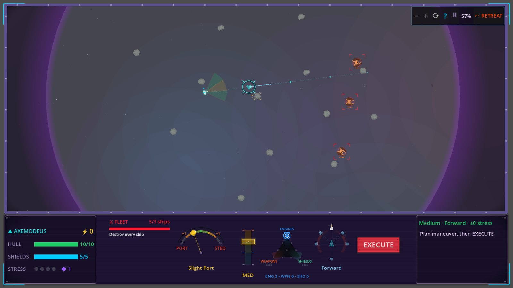
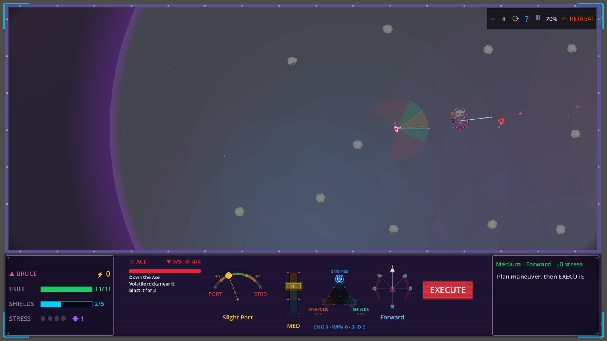
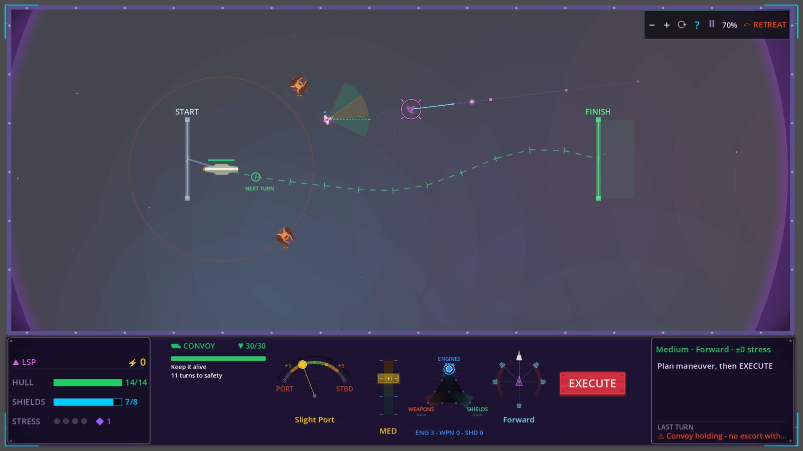
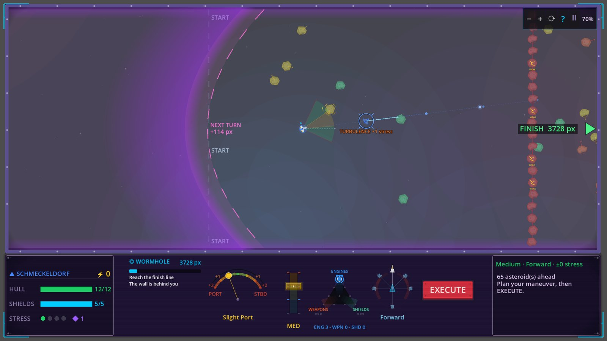

Telecrisis Chris
A turn-based space roguelike about momentum. Every star hides a Void Core. Plot your flight, swing through its attack window, and tear it down before the star's field, its defenders and its gravity tear you down first.

How a turn works
Every turn runs the same six phases. You commit in PLAN, then watch it play out.
- PLANthrottle, turn, power
- ACTIONdrain, overload, patch…
- ATTACKroll your dice
- HARVESTmine energy
- ENEMYthey shoot back
- GRAVITYthe star pulls
Momentum flight
Your speed carries. Set throttle, turn and power, then EXECUTE. Turning hard at speed builds stress, and a planned move can't be taken back.
Break the Void Core
The Core orbits the star behind shields. Drain them with energy or shoot them down, then hit its hull from inside the attack window.
Energy is everything
Harvest it from the field and spend it on upgrades, repairs, clearing stress and draining shields. Every spend is a trade.
Fly well, get paid
Beat par, chain clean turns and hold the sweet spot for bonus rewards. Good piloting pays out.
A run across the stars
Each run is a path across a star map. Pick your next node: a star fight, a side quest, or a transit stop to upgrade. Clear the path to the final Core.
Between stars you visit the Garage for ship parts and the Pilot's Lounge for new abilities and your pilot's keystone.
Clear tiers to unlock new pilots, launch protocols and harder mutators.

| Star | What to expect |
|---|---|
| 🌟 Yellow Star | Standard conditions. A fair fight. |
| 🔴 Red Dwarf | Dense field, slow flares. |
| 🔵 Blue Giant | Fast flares and a fast-spinning asteroid field. |
| 💫 Pulsar | Rapid flares and brutal gravity. |
Side quests
Not every node is a Core fight.
⚔ Fleet Skirmish
A squad of sentinels and nothing else. Destroy every ship.

☠ Ace Hunt
An enemy ace and its escorts. Bring the ace down. Volatile rocks near it can blast it too.

⛟ Escort Convoy
Keep a freighter alive until it reaches safety. Raiders want it, and it can only survive if you stay close.

◎ Wormhole Run
A race down a collapsing corridor. Reach the finish line before the wall behind you catches up.

Ways to play
Solo runs
The full roguelike: one pilot, one ship, one run across the stars.
Co-op
Two pilots, one run.
PvP
Pilot against pilot around a single star, with asteroids as cover.
Pilots
Eight pilots, each with their own ship, stats and signature ability. Meet them all →